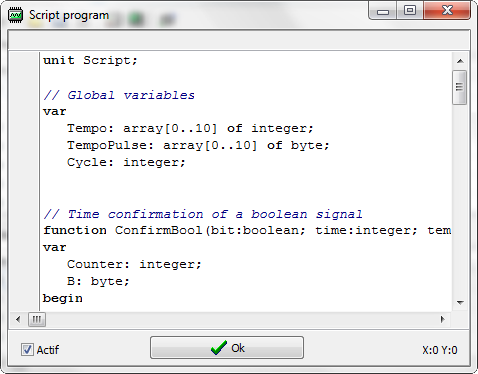

Un script peut être écrit et tourner en tâche de fond afin de réaliser des actions.
Par exemple, le retour de marche d'une pompe peut être simulée en conséquence de sa mise
en marche.
La case à cocher 'Actif' permet d'activer ou non le script au démarrage de l'émulateur.
Lorsque vous cliquez sur le bouton 'Ok' le programme valide la syntaxe du script et si une
erreur est détectée un message d'erreur s'affiche.